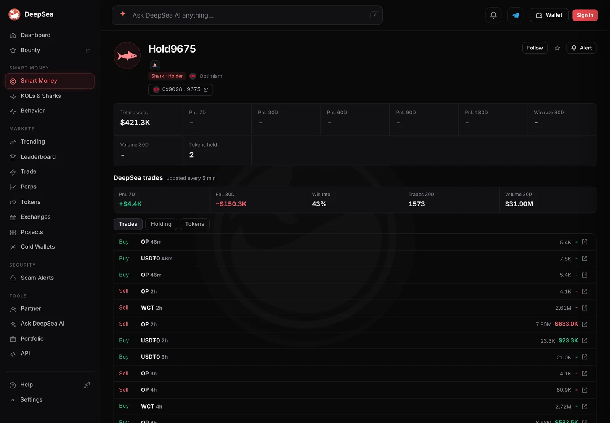

OP fell 9.6% in a day. Optimism sharks still bought $2.58 million and sold $2.38 million
Big wallets on OP Mainnet ended the day as small net buyers of OP and WLD while both tokens slid. Most of them are still losing money this week.
Key points
- In the 24 hours to 12:41 a.m. ET on November 15, 2026, 11 shark wallets on Optimism bought $2,575,513 of OP and sold $2,375,442, a net $200,071 in, DeepSea's flow table shows.
- CoinGecko had OP at $0.0816, down 9.6% in 24 hours, and WLD at $0.2626, down 8.2%. Sharks were net buyers of WLD too, by $310,727.
- Of 21 Optimism sharks with closed trades in the past 7 days, only 4 made money. The group was down $1.41 million.
 What DeepSea's data shows
What DeepSea's data shows
DeepSea's 24-hour flow table shows OP, the network's own token, as the most bought shark token on Optimism: 111 trades by 11 wallets, $2,575,513 bought and $2,375,442 sold. WLD (Worldcoin) drew 178 trades by 9 wallets, $1,972,458 bought and $1,661,731 sold.
The realized PnL table (built 12:38 a.m. ET) lists 21 Optimism sharks that closed trades in the past 7 days. Four were in profit. Together they lost $1,409,821, and 75 of their 365 closed trades were winners, about 21%.

Data: DeepSea (desea.io), checked November 15, 2026, 12:41 a.m. ET.
Buying into a falling token
Eleven shark wallets on Optimism bought $2,575,513 of OP and sold $2,375,442 in the 24 hours to 12:41 a.m. ET on November 15, 2026, a net $200,071 in, DeepSea's data show. They bought while CoinGecko showed OP falling 9.6% to $0.0816 at 12:46 a.m. ET. It was $0.0995 four days earlier.
New to the terms? Sharks are large, active wallets that DeepSea tracks by chain. On November 11, Optimism sharks sold a net $212,250 of OP in a day, so the direction has flipped.
WLD fell 8.2% to $0.2626, and sharks still bought $310,727 more than they sold. Bitcoin was down 3.3% and ether 4.9% over the same day, CoinGecko data shows.
Optimism sharks, 24-hour flows
US$ thousand
24 hours to 12:41 a.m. ET, November 15, 2026. Source: DeepSea live flows.
The wallets behind it
The busiest is Hold9675, DeepSea's name for a wallet ending in 9675. It traded $2,447,849 in and $2,333,199 out in 38 trades. Its trade list shows a buy of 6.86 million OP for $533,500 about four hours before our check and a sale of 7.80 million OP for $633,000 about two hours later. DeepSea puts it at plus $4,400 for 7 days and minus $150,300 for 30 days, on $31.90 million of volume. Its total assets are $421,300, down from $801,900 on November 11.
A wallet ending in 4dea is the week's biggest loser: minus $1,166,194, with none of its 21 closed trades in profit. Over 30 days it is down $2.83 million. In the last day it only sold, $68,006.
Others leaned one way. A wallet ending in e92f sold $889,855 and bought $104,712 in 99 trades. One ending in 083f bought $702,077 and sold nothing.

Why it matters
Net buying of about $200,000 is small next to $4.95 million of total OP trading by these wallets. Most of the volume was round trips. Still, the direction flipped from net selling four days ago, and it came during a fall of almost 10%. The data shows trades, not reasons.
LC Insight analysis
This section is our reading of the facts above, not a statement of fact.
- We think the switch from net selling on November 11 to net buying now is worth tracking, but at $200,000 it is a lean, not a wave.
- Hold9675 trades fast. It bought and sold millions of OP within hours, and its assets halved in four days.
- A 21% win rate across 365 closed trades in a week shows how hard this market has been even for large wallets.
What's next
- Whether Optimism sharks stay net buyers of OP
- Whether OP holds above $0.08
- The 4dea wallet's losses, now $2.83 million in 30 days
Disclaimer. This article is based on public information and the sources listed below as of the update time shown. It is for information only and is not investment, legal or tax advice. Figures may change as companies and authorities publish new data.
Sources
- DeepSea, live flows by token and wallet, 24 hours (read November 15, 2026, 12:41 a.m. ET)
- DeepSea, realized PnL table, 7 and 30 days (read November 15, 2026, 12:41 a.m. ET)
- DeepSea, Hold9675 wallet page on Optimism (read November 15, 2026, 12:44 a.m. ET)
- CoinGecko, Optimism (OP) price (read November 15, 2026, 12:46 a.m. ET)
- CoinGecko, Worldcoin (WLD) price (read November 15, 2026, 12:46 a.m. ET)